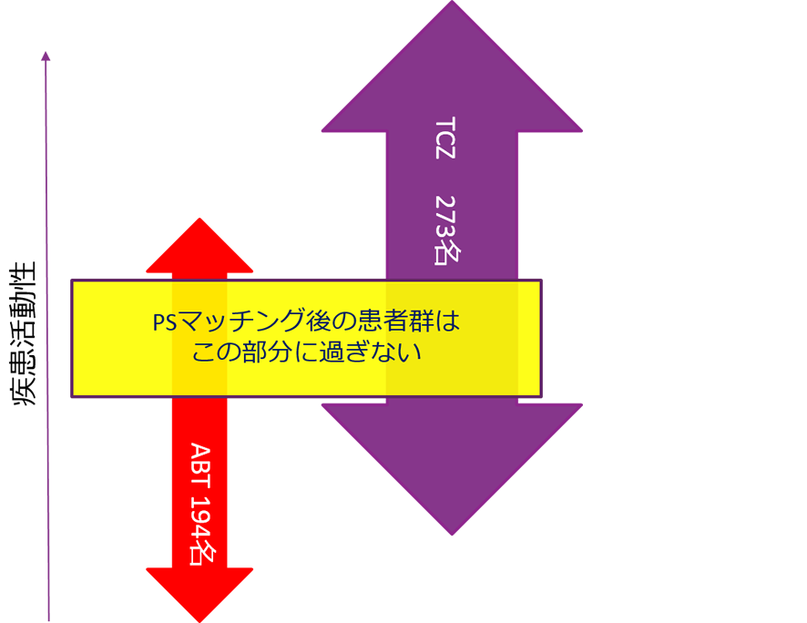

対オレンシア③有効性
参考：プロペンシティスコアマッチングとは？
プロペンシティスコアマッチングとは？
- ・治療の割り当てに影響する因子（年齢・前治療など）を用いて傾向スコア（propensity score）を算出し、この傾向スコアの点数の近い患者同士を比較する方法。
- ・Head to Head試験のような研究デザインはエビデンスレベルが高いとされているが、実臨床ではできないことの方が多いため、PSが用いられることがある。
- ・疑似的に観察研究のデータを無作為化割り付け試験のように解析する。
【注意点】
- ・あくまで無作為割付試験ではないのでエビデンスレベルは劣る。
- ・似た背景の患者（ABT群は約半数、TCZ群は約1/3）をピックアップしているため、実臨床下で使用されている患者背景とは異なる。
- ⇒アクテムラは実臨床では、重症例・治療困難例に使用されているが、PSではその結果は反映されていない
